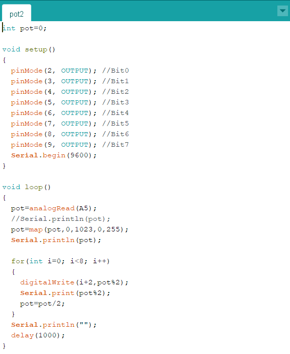
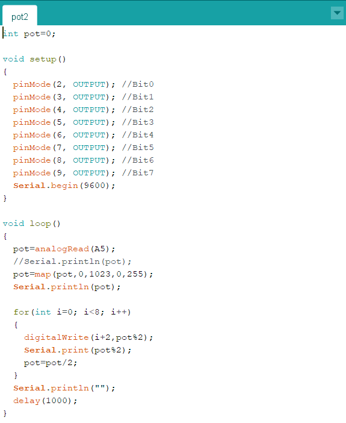
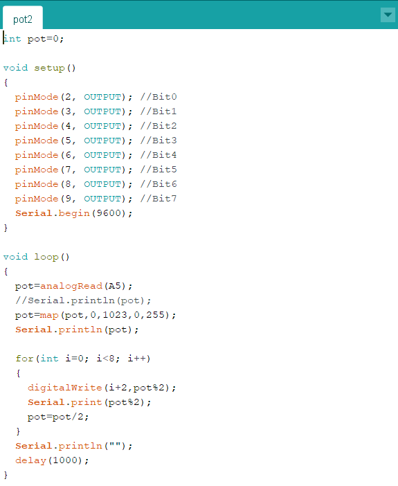

Diseñar un sistema que permita convertir el valor analógico de un potenciómetro en un arreglo de variables que representen el numero en binario de 8 bits.
 

Practica 2:
Diseñar un sistema que permita convertir el valor analógico de un potenciómetro en un arreglo de variables que representen el numero en binario de 8 bits.
